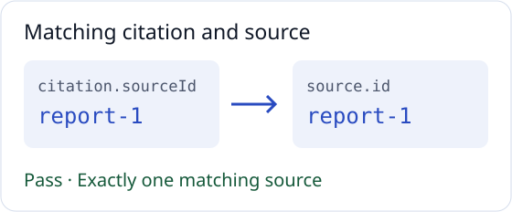
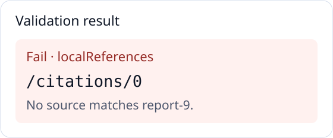

Validate relationships in JSON
HESchema extends JSON Schema with rules that compare values across fields, arrays, and records.
A citation can have a correctly formatted ID and still point to a source that isn't in the document. HESchema checks that the reference resolves to exactly one included source.
{
"sources": [{"id": "report-1"}],
"citations": [
{"sourceId": "report-1"}
]
}How HESchema works
Describe the relationship in your schema
Choose a HESchema dialect and add a keyword that describes the rule. Here, localReferences checks each citation’s sourceId against the IDs in the document’s sources array.


Find the item that breaks the rule
Run the schema with the HESchema validator. If the citation changes to report-9, the validator reports /citations/0, the first citation in the document. That path tells you where to fix the data.